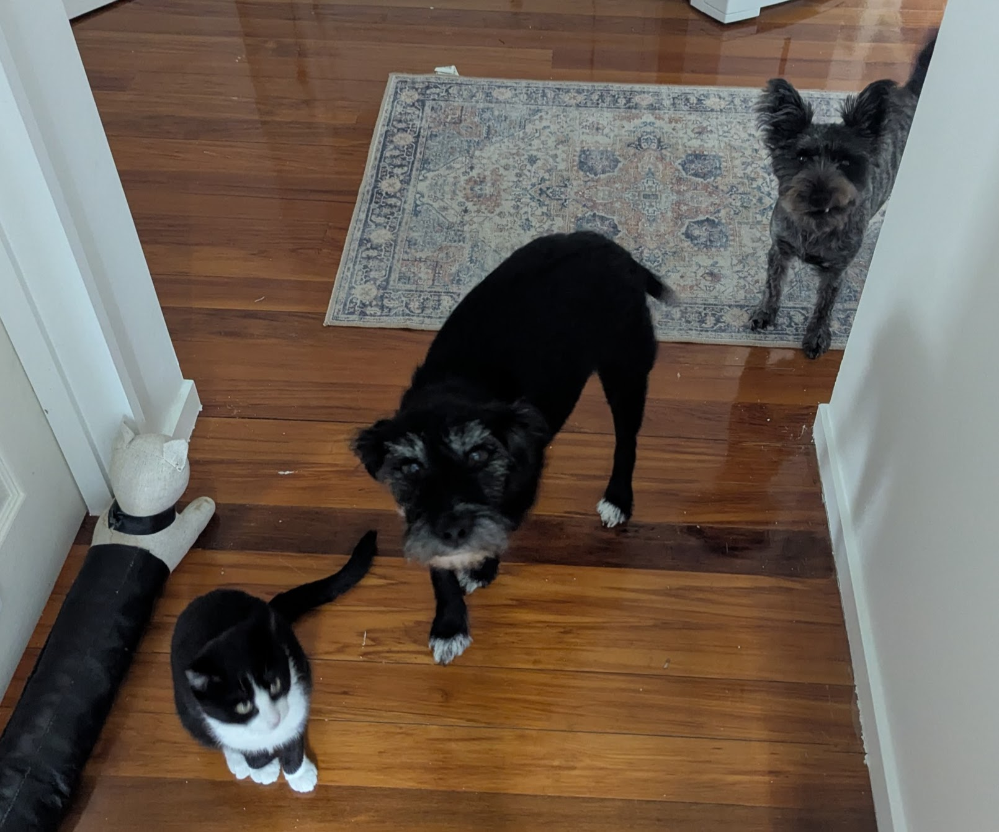

Before coming to New Zealand, I was a bit nervous about living with a host family. I had never lived with people I didn't know before, and I was worried about how we would get along. I was also concerned about the cultural differences and how they might affect our interactions. However, I was also excited about the opportunity to experience a new culture and learn from my host family. I hoped that we would be able to communicate well and that they would be understanding of my needs and preferences but also that I would be able to adapt to their way of life and that my english would be good enough. I was a bit afraid that I would get my host family like a week before I left because I've heard that this happened to someone. But luckily I got my host family six weeks before coming to New Zealand. And the first conversations were a bit awkward because I didn't know what to say, was a bit nervous and I wanted to make a good first impression. So I was a bit afraid to say something wrong.
Living with my host family has been a wonderful experience. They have been incredibly welcoming and supportive, making me feel like a part of their family from the very beginning. We bonded really quickly and I felt comfortable around them. I could not have asked for a better host family and I am so grateful and happy. Also, having basic conversations with them is much easier then I thought regarding my english skills. I feel like I can communicate with them really well and they are very understanding and patient with me. They have also been very helpful in showing me around the area and introducing me to local customs and traditions. Overall, living with my host family has been a positive and enriching experience that has greatly enhanced my time in New Zealand. Another aspect that I really enjoy are their two dogs and cat. I don't have any pets at home, so it's just so cool.
